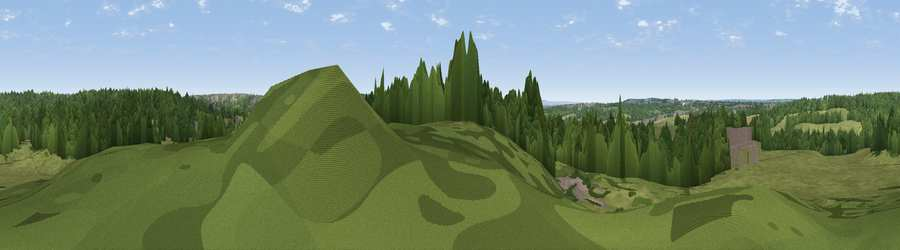

Viewpoint near South Weald
#43392 in England · top 58% of its area beats it · near South WealdWhere it is
The exact computed spot (TQ 57125 93975). Click the marker for map links.
The view, rendered

A 360° render of this exact spot computed from the terrain model, tree cover and land cover — summer colours, afternoon light, calibrated against photographs of famous viewpoints. Real trees, hedges and buildings will differ in detail.
The panorama
Grey silhouette: terrain skyline in each direction (720 bearings, Earth curvature and refraction included). Dashed green: skyline with trees (+15 m) and buildings (+8 m) as obstacles. Blue strip: how far the ground is visible on each bearing.
Where the view opens
Wedge length = distance to the farthest visible ground on that bearing (vegetation-aware). Rings at 10, 25 and 50 km.
What fills the view
51% woodland · 40% grassland · 5% built-up · 3% cropland
Angular shares of the visible panorama (visual magnitude), not map area. Landscape diversity 0.43 (0–1 Shannon).
Key numbers
More beautiful places nearby
The staircase of upgrades: each row has a higher view potential than everything closer. Driving times are estimates from straight-line distance, calibrated against real road routing — check an actual route before setting out.
| Place | Direction | Drive | Score |
|---|---|---|---|
| Brentwood Park | SE · 3 km | ~8 min | 32.3 |
| Viewpoint near Great Warley | S · 5 km | ~10 min | 40.0 |
| Jury Hill | SE · 7 km | ~14 min | 48.5 |
| Viewpoint near Horndon On The Hill | SE · 13 km | ~24 min | 51.8 |
| Viewpoint near Vange | ESE · 16 km | ~28 min | 58.2 |
| Viewpoint near South Benfleet | ESE · 23 km | ~38 min | 59.8 |
| Viewpoint near Hadleigh | ESE · 24 km | ~39 min | 61.0 |
| Viewpoint near Birling | SSE · 33 km | ~51 min | 65.1 |
51.62266, 0.26840 · source: screening · position refined by local search. Computed location — check access rights before visiting.